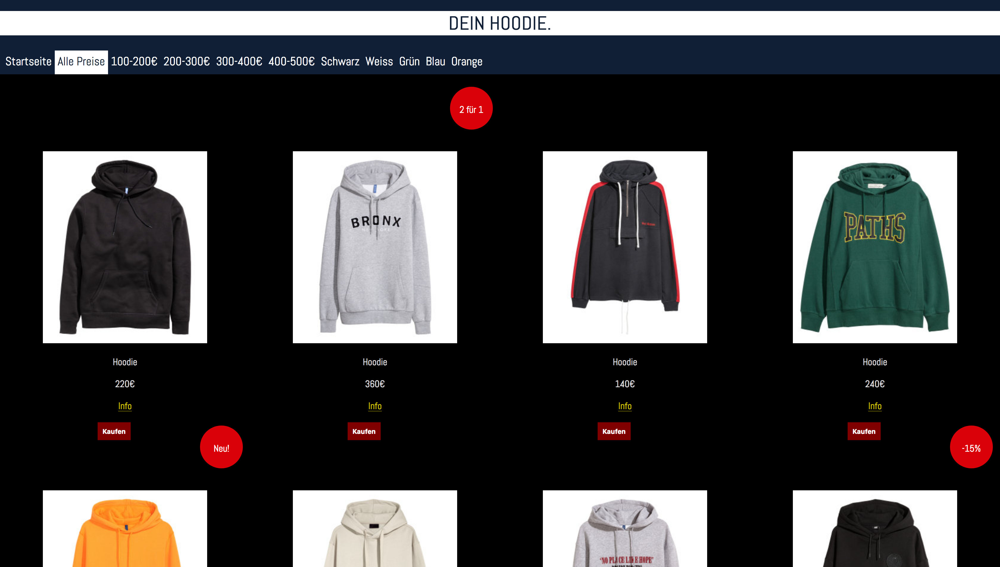

Entwicklung Interaktive Anwendung I
Für das Fach 'Entwicklung Interaktiver Anwendungen I' habe ich auf Basis von HTML, CSS und TypeScript folgende Projekte entwickelt.
 Zum Online-Shop Zum Wikipedia-ArtikelEntwicklung Interaktive Anwendung II
Hier entwickle ich zur Zeit ein Memoryspiel und erweitere dies mit weiteren Interaktionen.
Zum MemoryUser Experience Design
Das Verhalten vom User als auch die Anpassung der Interaktion von digitalen Medien werden analysiert.
Die Persona von chefkoch.de und die Wireframe der Website.